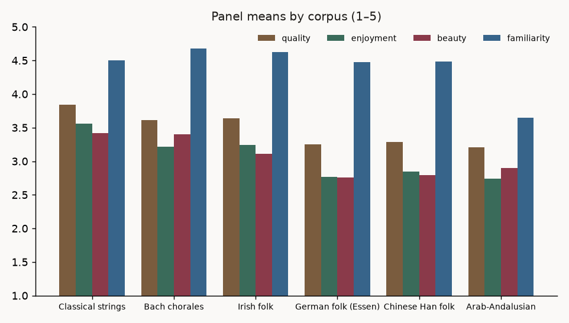

The same LLM panel that judges the models' own music scored 801 pieces of human music from six traditions, with four added hedonic (pleasure-related) questions and an origin guess. All numbers are computed from the committed data at build time. Generated by llm-music genre-report.
Headline result: whether an LLM judge scores unfamiliar music harshly turns on recognition, not on prejudice against the culture. In a within-piece experiment, telling the judges a piece is Arab-Andalusian makes them rate it higher, not lower (Δ quality -0.52 points when the genre name is removed; p < 0.001, where p is the probability of a gap this large arising by chance — with a flat retest control). Blind, judges misread the music as clumsy Western writing and mark it down; the label switches on genre-appropriate standards. Full experiment in the “know what they're listening to” section below.
I sampled 801 pieces of human music from six corpora (aiming for 75 major / 75 minor per corpus, best-effort where a corpus skews: the classical arm has 51 pieces, the Arab-Andalusian split is 118/32). Every piece was converted to the same note-listing text the LLM pieces are judged in, and the same 10-judge panel scored each one — 8001 verdicts. The rubric keeps the original 8 quality dimensions plus valence/arousal (perceived positivity and energy of the music, after the Russell circumplex model of emotion1) unchanged and adds four new hedonic — i.e. pleasure-related — 1–5 questions (enjoyment, interest, beauty, familiarity) and a free-text guess at the piece's tradition or origin. The question behind the design: do LLM judges score non-Western music lower, and if so, is it mediated by unfamiliarity?
The new questions could plausibly change how the panel scores the old ones. The bach arm gives a direct test: 107 of its chorales were already judged in the 371-chorale run with the original rubric — same pieces, same judges. Across 1065 paired verdicts, mean quality moved from 3.53 to 3.61 (a +0.08 shift, spread evenly over the dimensions), and piece-level scores correlate at r = 0.85. Per-judge favors-major bias replicates at r = +0.62. So the extended rubric measures roughly the same thing, and the results below can be compared with earlier runs.
One second-level statistic did move: the own-major ↔ favors-major correlation is r = +0.69 in the old run — and still +0.69 when the old run is restricted to these same 150 chorales — but +0.53 in the new run. So the drop comes from the re-run itself, not the smaller sample. The judges with large biases (llama, opus, fable, sonnet, deepseek) are stable across runs; the near-zero judges wobble (gpt-4.1 -0.03 → +0.18, gemini -0.02 → -0.17), and with 10 judges two wobbles move the correlation this much. I can't fully separate rubric influence from re-roll noise without re-running the old rubric, but the stability of every large bias points at noise on the small ones.

| corpus | n | quality | enjoyment | interest | beauty | familiarity |
|---|---|---|---|---|---|---|
| Classical strings | 51 | 3.84 | 3.56 | 3.60 | 3.42 | 4.50 |
| Bach chorales | 150 | 3.62 | 3.22 | 3.03 | 3.40 | 4.68 |
| Irish folk | 150 | 3.63 | 3.24 | 2.92 | 3.11 | 4.62 |
| German folk (Essen) | 150 | 3.25 | 2.77 | 2.44 | 2.75 | 4.48 |
| Chinese Han folk | 150 | 3.28 | 2.85 | 2.52 | 2.79 | 4.48 |
| Arab-Andalusian | 150 | 3.21 | 2.74 | 2.53 | 2.90 | 3.64 |
The raw ranking is consistent with a Western-bias story for the two non-Western arms, but German folk (Essen collection) scoring at the same level complicates it: the shared property of the three low arms is that they are mostly short monophonic melodies (a single unaccompanied melody line), while the three high arms have harmony or counterpoint (several interweaving melody lines) written out. The sizes make this concrete — mean notation length per piece is German folk (Essen) 72 tokens, Chinese Han folk 98 tokens, Irish folk 137 tokens, Bach chorales 364 tokens, Arab-Andalusian 499 tokens, Classical strings 1446 tokens. Some of the gap is plausibly a texture and scale penalty, not a cultural one.
| corpus | origin guess correct |
|---|---|
| Classical strings | 70% |
| Bach chorales | 62% |
| Irish folk | 21% |
| German folk (Essen) | 28% |
| Chinese Han folk | 7% |
| Arab-Andalusian | 61% |
The note listings carry no titles and no lyrics (the Bach chorales' words are stripped along with everything else non-musical), so recognition rests on the notes alone — with one exception covered below. Bach, the classical arm, and (with that caveat) the Arab-Andalusian arm are usually recognized. The Chinese Han pieces are recognized 7% of the time — judges typically read them as Western material. Some sample guesses for Chinese pieces: “Western European folk”; “European/Anglo-American folk tune, 19th century”; “Chinese pentatonic folk melody”; “Classical-period European keyboard melody, late 18th century”; “Western folk melody or children's song”. Irish and German folk mostly blur into generic “Western European folk”. So for the chinese_han arm the low scores come without the judges knowing the music is Chinese — whatever penalty it gets is not applied to a “Chinese” label.
A leak, and a lucky natural experiment. 122 of the 150 Arab-Andalusian pieces carry text inside the notation itself — either an explicit genre form name (e.g. “Tawshiya Qaim Wa Nisf”) or just an Arabic song title, inherited from the source MusicXML as inline directions. No other corpus leaks anything like this. Splitting the arm three ways in the original run:
| group | n | quality | enjoyment | familiarity | origin correct |
|---|---|---|---|---|---|
| genre form name in notation | 81 | 3.38 | 2.95 | 3.42 | 79% |
| Arabic song title only | 41 | 3.13 | 2.68 | 3.65 | 66% |
| never had text (control) | 28 | 2.85 | 2.23 | 4.27 | 0% |
The gradient runs with how informative the text is: with a genre name judges recognize the tradition most, admit the least familiarity — and score the music highest; with only an Arabic title, less so (the title's language still cues the region); with no text at all, recognition is 0% — judges have never identified this music from the notes — and scores are lowest, while claimed familiarity is highest (consistent with misreading it as some Western idiom they know). On its own this is only suggestive — the groups are different slices of the repertoire — so I made it a real experiment.
The blind re-run. I re-judged the whole arm with every quoted string stripped from the notation — same pieces, same judges, same rubric; only the embedded text changes. Splitting the pieces by what their text originally said (an explicit genre form name, only an Arabic song title, or nothing — the last group re-judged unchanged as a retest control):
| group | n | Δ quality | Δ enjoyment | Δ familiarity | origin correct | perm p |
|---|---|---|---|---|---|---|
| genre form name in notation | 81 | -0.52 | -0.55 | +0.82 | 79% → 0% | < 0.001 |
| Arabic song title only | 41 | -0.24 | -0.26 | +0.62 | 66% → 0% | < 0.001 |
| never had text (control) | 28 | +0.01 | +0.04 | -0.02 | 0% → 0% | 0.58 |
The control is flat (+0.01, p = 0.58) — test-retest noise is tiny — and it was never recognized in either run: with no text at all, judges identify Arab-Andalusian music 0% of the time. All recognition in this arm is read off the embedded text, and the effect is dose-shaped: an explicit genre name protected 0.52 points of quality, a mere Arabic title (which cues the region through its language) protected 0.24, and both vanish when stripped. Blind judges also claim more familiarity while scoring lower — consistent with misreading the music as a Western idiom and penalizing it by Western standards.
The headline. Telling an LLM judge that a piece is Arab-Andalusian makes it score the music higher, not lower. The naive worry — that a non-Western label triggers a penalty — points the wrong way. The penalty comes from not knowing: blind, judges misread the music as a clumsy Western piece and mark it down by Western standards; the label switches on genre-appropriate expectations and the penalty lifts — in proportion to how informative the label is (Δ quality -0.52 for a genre name, -0.24 for an Arabic title, +0.01 for the no-text control; p < 0.001). A within-piece manipulation with a flat retest control — the single cleanest causal result in this experiment.
The familiarity question was added as a candidate mediator: if judges score music lower because the idiom is foreign to them, controlling for self-reported familiarity should shrink the arm gaps. Regression of quality on corpus + judge, with and without familiarity as a covariate (slope +0.27 quality points per familiarity point):
| corpus | gap vs Bach | after familiarity control |
|---|---|---|
| Arab-Andalusian | -0.41 | -0.13 |
| German folk (Essen) | -0.36 | -0.31 |
| Chinese Han folk | -0.33 | -0.28 |
| Irish folk | +0.02 | +0.03 |
| Classical strings | +0.23 | +0.28 |
Familiarity explains most of the Arab-Andalusian gap (-0.41 → -0.13) — it is the only arm judges self-report as unfamiliar (3.64 vs ~4.5 elsewhere). It explains almost none of the Chinese or German folk gaps, which fits the origin-guess result: judges think that music is familiar Western material, so unfamiliarity can't be what drives its penalty. Two different mechanisms, then: an unfamiliarity penalty for the Arab arm, and something else — plausibly the monophonic-texture penalty — for the folk arms.
Comparing word frequencies in the written justifications for the Arab-Andalusian pieces against the Western art/folk arms, the most over-represented words (after the form names themselves) are about repetition: “oscillation”, “loop”, “verbatim”, “endless”, “looping”, “oscillating”. Nuba movements (the multi-movement suite form of Arab-Andalusian music) repeat short cells extensively, and in a note-by-note text listing that repetition is literal — hundreds of near-identical bars — which likely reads worse than it sounds. The low harmony scores also show judges applying functional-harmony expectations — the Western system of chords progressing toward a home key — to music that is modal (built on melodic formulas outside the major/minor system) and monophonic:
“Stays firmly in C major with only diatonic movement and no purposeful harmonic progression or tension.”
“While tonally centered, the harmony is static and undeveloped, relying on a few oscillating notes without implying any real progression.”
“As a single line in a major key it is tonally simple, but it wanders without establishing a strong sense of direction or harmonic implication.”
The German folk penalty has a completely different vocabulary. Its most over-represented justification words are about simplicity: “beginner” (190×), “pedagogical” (128×), “inoffensive” (193×), “children's” (68×), “unadorned” (78×). The judges find the idiom familiar and dismiss it as beginner material — a simplicity penalty, not an unfamiliarity one.
Judge-centered mean quality per corpus (each judge's grand mean subtracted, so the columns show relative taste). Most judges penalize the Arab-Andalusian arm; gemini and deepseek don't. The classical arm splits the panel widely (gpt-4.1 +0.97, gemini −0.21). gemini is the judge that most bucks the art-music-first pattern.
| judge | Classical strings | Bach chorales | Irish folk | German folk (Essen) | Chinese Han folk | Arab-Andalusian |
|---|---|---|---|---|---|---|
| deepseek | +0.60 | +0.05 | +0.08 | -0.21 | -0.15 | +0.03 |
| fable | +0.91 | +0.48 | +0.23 | -0.26 | -0.28 | -0.48 |
| gemini | -0.21 | -0.23 | +0.31 | -0.12 | -0.00 | +0.12 |
| gpt-4.1 | +0.97 | +0.32 | +0.12 | -0.39 | -0.27 | -0.11 |
| gpt-5.5 | +0.76 | +0.08 | +0.31 | -0.03 | -0.09 | -0.52 |
| grok | -0.02 | +0.05 | +0.39 | +0.00 | +0.08 | -0.51 |
| llama | +0.15 | +0.08 | +0.16 | -0.15 | -0.09 | -0.05 |
| opus | +0.22 | +0.31 | +0.12 | -0.26 | -0.16 | -0.08 |
| qwen | +0.05 | +0.31 | +0.14 | -0.11 | -0.14 | -0.22 |
| sonnet | +0.75 | +0.44 | +0.19 | -0.21 | -0.34 | -0.35 |
The Bach experiment found that judges who compose in major favor major pieces (r = +0.69 over all 371 chorales). The same correlation computed inside each of these corpora:
| corpus | major/minor | r (own major rate vs favors-major) | perm p |
|---|---|---|---|
| Classical strings | 41/10 | -0.05 | 0.898 |
| Bach chorales | 75/75 | +0.53 | 0.115 |
| Irish folk | 75/75 | +0.45 | 0.188 |
| German folk (Essen) | 75/75 | -0.71 | 0.017 |
| Chinese Han folk | 75/75 | -0.23 | 0.525 |
| Arab-Andalusian | 118/32 | +0.14 | 0.697 |
Bach and Irish folk go the same direction as before; the German folk arm reverses, and with 6 tests its p = 0.017 is only borderline. One concrete confound: within that arm, mode is entangled with sub-collection — 24 of the 75 minor pieces come from the altdeutsche Lieder (archaic songs) versus 5 of the major pieces, so “minor” there largely means “older repertoire”. Judges' per-arm mode biases also correlate positively across every pair of arms except the German folk arm, which anti-correlates with all of them — pointing at the arm's composition rather than judges being fickle. I'd summarize: the mode-bias generalization holds on Bach and Irish folk and is confounded on the arms where the major/minor split is not apples-to-apples (German sub-collections; forced major/minor labels on pentatonic — five-note-scale — Chinese material).
Sampling: scripts/sample_human_corpora.py, seed 0, stratified by detected mode; the frozen sample is committed as human_corpora_sample.json. Judging: scripts/judge_human_corpora.py, one API call per (piece, judge), reason-before-score, same protocol as every other run; raw verdicts in judge_human_raw.json. Caveats: the corpora differ in texture and length, so cross-corpus gaps mix cultural and musical-form effects; the Arab form-name leak means that arm's origin recognition is partly read off the text; second-level correlations use n = 10 judges; and the keyword origin-matching is approximate. On keys: three labels exist per piece — the engraved source key signature, the source-declared key the judges see in the rep header, and the detected key — via the Krumhansl–Schmuckler algorithm2, which infers a key from the piece's note-usage profile — used for mode stratification and the mode-bias analysis. They disagree exactly where music is modal, pentatonic, or tonally ambiguous, so major/minor on those arms is an algorithmic best fit. Judges almost never react to the declared header (mentions of the stated key appear in at most 0.2% of dimension-reasons), so the imperfect header is unlikely to move scores. Reproduce with scripts/analyze_human_corpora.py and llm-music genre-report.